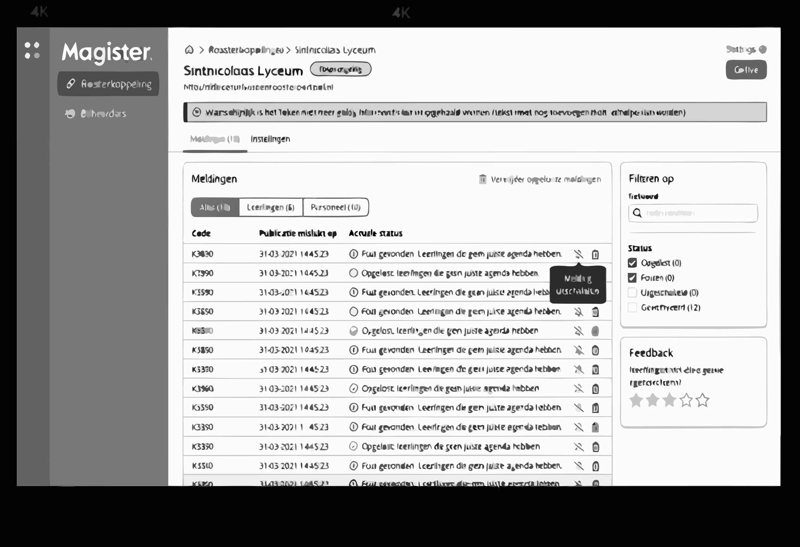

Strategic Discovery for a 2M+ User Platform
How top-task research on a 14-year-old platform reversed a declining market position and unlocked a multi-million euro investment.
The stakes
Magister was the dominant school administration platform in Dutch secondary education. Over two million people used it every day: students checking timetables, parents tracking grades, teachers logging attendance. At its peak, Magister held 80% market share across the Netherlands.
But the product was built on a 14-year-old Delphi codebase, delivered as a remote desktop application. Schools were starting to demand modern, web-based alternatives. Competitors saw the gap. By the time I joined, market share had dropped to 60% and the trend was accelerating.
The company knew something had to change. The question was what. A direct rebuild, replicating every feature in a modern stack, would take an estimated ten years. Nobody had ten years. The board had not approved a new product roadmap in three years.

What I did
I proposed top-task research as the way to cut through the complexity. The methodology is straightforward: identify the small number of tasks that account for the vast majority of usage, and focus everything on those. It sounds simple. Getting an organisation to accept that most of their features do not matter is the hard part.
I started with six user interviews. That number raised eyebrows internally. People expected surveys with hundreds of respondents. But six carefully chosen interviews, conducted with proper task analysis methodology, revealed a pattern that no survey would have surfaced as cleanly: 95% of daily usage concentrated in just 6 to 10 tasks.
The remaining hundreds of features, the ones that had accumulated over fourteen years of saying yes to every request, accounted for almost nothing in actual daily use.
I verified the findings with domain experts inside the company, then mapped the top tasks against the Dutch school calendar to build a migration sequence. This was critical: schools cannot absorb a platform change mid-term. The calendar gave us natural migration windows.
![Top Task Discovery diagram mapping school administration tasks across three terms of the Dutch school year. Term 1 covers setting up the school year, authorisation, student administration, and grade structure. Term 2 covers student data processing, timetabling, learning materials, and auditor preparation. Term 3 covers new student enrolment, exam configuration, and de-registration. Each task category is colour-coded: blue for authorisation, green for grades, pink for enrolment, amber for PTA, purple for timetable, teal for school structure, coral for exams, lavender for learning materials, peach for student administration, and mint for management.](top-task-diagram.png)
With product management, I built a phased business case. Not a redesign pitch. Not a concept deck. A financially grounded argument for focused investment, with clear phases tied to school year cycles.
The decisions that mattered
Three deliberate choices shaped the outcome.
First, I chose depth over breadth in the research. Six interviews instead of six hundred. This was a risk. But depth revealed the usage concentration pattern that made the entire strategy possible. A broad survey would have produced averages. Averages would have preserved the status quo.
Second, I framed the business case around what to build first, not what to build eventually. The board had been paralysed by the scale of the full migration. By showing that a small number of tasks covered nearly all daily use, I reduced a decade-long problem to a manageable first phase.
Third, I mapped the migration to the school calendar rather than engineering sprints. This shifted the conversation from internal capacity planning to customer reality. Schools think in terms and semesters, not quarterly OKRs.
What happened
Results
The board approved a three-year product roadmap, the first in three years. The approval unlocked €3M+ in development investment.
Market share stabilised after three consecutive years of decline.
Iterative delivery of the web platform began in Q4 2020.
The company’s reputation shifted. Schools that had described Iddink as “arrogant” began calling them “listeners.” That perception change mattered as much as the product work.
Don came in with so much experience, yet he served the younger ones in building up strategic blocks. Really impressed with Don’s constant push to become better in focusing on end users and what they need.Edwin PersoonFormer CTO, Iddink Group
What I learned
This project taught me that the most powerful research findings are the ones that give leaders permission to do less. The board was not lacking ambition. They were lacking a credible way to reduce scope without feeling like they were abandoning their users.
Six interviews, properly conducted, unlocked more investment than years of feature requests. The disproportionate return was not accidental. It came from choosing the right methodology for the right problem: when everything seems important, top-task analysis reveals what actually is.
I also learned that presenting to a board is a design problem. The deliverable is not slides. It is confidence. They needed to believe that we understood the situation well enough to make decisions they could stand behind. That required evidence, not enthusiasm.